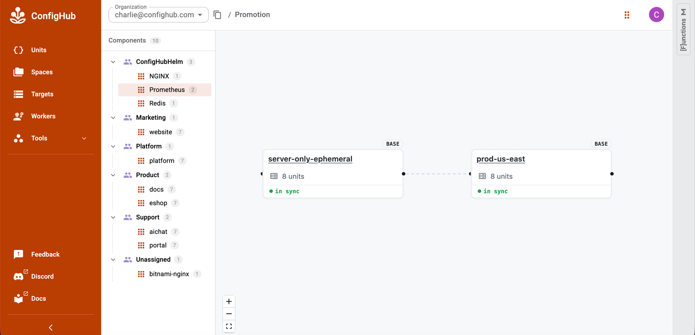

UNOFFICIAL/EXPERIMENTAL
This page is a short show-and-tell path through the project. Each tutorial says what you are doing, what to look for, and what the result means:
what the tutorial proves
-> explanatory flow
-> commands
-> what success looks likeFor concrete output snippets and cluster choices, keep Expected Results And Clusters open beside this page. A tutorial should always give the user a local check, a UI check, or a receipt to compare with their own output.
The first tutorials use Redis because it is small and familiar. The later tutorials show promotion, custom overlays, the GitOps/runtime proof lane, and bulk operations over uploaded ConfigHub Units.
Run From The Repo Root
Start from a current checkout:
git clone https://github.com/confighub/helm-expt.git
cd helm-expt
git status --short --branchIf you already have a checkout, run from the repository root for the optional npm run ... proof checks. The cub installer setup --pull oci://... commands pull public installer packages and do not require a repo-local packages/... path.
Prerequisites
Install or verify the local tools before Tutorial 1:
New to cub? Install the cub CLI first. One command, and no ConfigHub account is needed for the catalog paths.
cub version
cub plugin install confighub/installer
cub installer --help
command -v kustomize || brew install kustomize
command -v kustomize || go install sigs.k8s.io/kustomize/kustomize/v5@latest
cub context get -o json
cub space list -o jsoncub installer setup shells out to kustomize build; the first setup fails if kustomize is not on PATH. The tutorials do not require helm.
cub context get -o json proves a context is selected. cub space list -o json is the useful auth check for the upload tutorials. If it fails with an authentication problem, run:
cub auth loginTutorials with live Kubernetes steps also need kubectl on PATH and a reachable cluster context. Users can bring their own cluster. For a disposable local Argo/kind rig, cub lk is one option when the tutorial needs ConfigHub OCI and an in-cluster reconciler.
Verification Names Used Here
This page uses three different verification layers. These are not all part of the default product UX. Use the narrowest check that matches the thing you just did.
| Name | Scope | Reruns Helm? | Touches a cluster? |
|---|---|---|---|
npm run verify | Repository-wide committed artifact consistency: docs, command surfaces, recipes, packages, receipts, catalog data, and generated data. | No, not in the default path. | No, it verifies committed receipts. |
redis:compare | Fresh Redis Helm-vs-cub installer comparison. | Yes. | No. |
Most <chart>:compare commands | Curated chart package/setup verification against the stored Helm-rendered object set. | No; fresh Helm rendering happens in :generate-proof. | No. |
redis:verify-install:* | A user's own Redis tutorial state after setup, upload, or apply. | No for render; it checks the user's rendered work dir against the Redis acceptance contract. | Only redis:verify-install:cluster; when available, cub-scout writes live object-set, workload, and prerequisite receipts. |
redis:verify-install:* currently ships because Redis is the first outside-user quick-start with recipes/bitnami/redis/25.5.3/install-checks.yaml. Other tutorials use chart-specific proof/package checks, generated goldens, or live ConfigHub/GitOps checks until they get their own install-checks.yaml.
For a first user journey, skip the broad npm run verify command unless you are reviewing the repository itself. The ordinary checks should be things like:
cub installer setup completed
work directory has out/manifests
ConfigHub Space has Units
kubectl shows workloads
the specific receipt for this step says PASS, watch, or blocked with a reasonPicking A Path
For a quick outside-eyes test, run Tutorial 1 and Tutorial 7 first. Tutorial 7 is the most self-contained operating demo after the NGINX base is uploaded.
Tutorials 2 and 6 touch live Kubernetes. Tutorial 6 also depends on Argo CD and the ConfigHub OCI target created by cub lk up.
Tutorial 1: Redis Quick Start
This proves the basic path from a public Helm chart to ConfigHub Units.
Helm chart
-> cub installer recipe/package
-> choose a base variant, e.g. redis/default
-> cub installer setup renders Kubernetes YAML
-> cub installer upload creates ConfigHub UnitsRun the render and upload path:
The first two commands are local. The upload and ConfigHub verification require an authenticated cub CLI in the organization where you want the demo Space to be created. If helm-redis-default already exists, choose a unique Space slug or reuse the same work directory to reconcile the existing upload.
cub installer setup \
--pull oci://europe-west1-docker.pkg.dev/nth-fort-499605-q5/helm-expt/bitnami-redis:25.5.3 \
--base default \
--work-dir .tmp/demo/redis-default \
--non-interactive \
--namespace redis
npm run redis:verify-install:render -- \
--base default \
--work-dir .tmp/demo/redis-default \
--namespace redis
cub installer upload \
--work-dir .tmp/demo/redis-default \
--space helm-redis-default \
--component Redis \
--layer App \
--environment Demo \
--owner ConfigHubHelm \
--variant default \
--unit-label Component=Redis \
--unit-label HelmChart=bitnami-redis \
--unit-label HelmChartVersion=25.5.3 \
--unit-label Variant=default \
--unit-label Proof=redis-confighub-proof
npm run redis:verify-install:confighub -- \
--base default \
--space helm-redis-defaultWhat success looks like:
Redis/default renders the same Kubernetes objects as regular Helm.
ConfigHub stores the rendered objects as labeled Units.
You can verify both the local render and the uploaded Units.Check that ConfigHub has the Redis Units:
cub unit list --space helm-redis-default \
--columns Unit.Slug,Unit.Labels.Component,Unit.Labels.VariantExpect 15 Units: 14 Redis Kubernetes objects plus installer-record.
Where to look in the UI:
ConfigHub -> Space helm-redis-default -> UnitsFull script: docs/demo/redis/demo-script.md.
You can see a UX proposal for this stage here: Redis Quick Start UX Proposal.
For a standard Helm baseline, install the same chart into a separate namespace or throwaway cluster, then compare at the parity layer rather than by eye. The strict comparison path is documented in Expected Results And Clusters.
Tutorial 2: Redis Secret Modes
This proves why some choices are base variants, not post-render edits.
redis/default
Helm renders Secret redis/redis.
cub installer separates the Secret to out/secrets for local use.
ConfigHub records references and proof, not hidden public secret material.
redis/reuse-existing-secret
Helm renders no Redis Secret.
Workloads reference redis/redis-existing-secret key redis-password.
The existing Secret is a target fact and external requirement.Run the existing-Secret path:
This tutorial is written for the catalog namespace redis. Redis embeds that namespace in service DNS values, so changing the namespace changes rendered object data. Treat a different namespace as a separate render choice and review the diff deliberately.
kubectl --context <your-context> create namespace redis \
--dry-run=client -o yaml | kubectl --context <your-context> apply -f -
kubectl --context <your-context> -n redis create secret generic redis-existing-secret \
--from-literal=redis-password=confighub-redis-password \
--dry-run=client -o yaml | kubectl --context <your-context> apply -f -
cub installer setup \
--pull oci://europe-west1-docker.pkg.dev/nth-fort-499605-q5/helm-expt/bitnami-redis:25.5.3 \
--base reuse-existing-secret \
--work-dir .tmp/demo/redis-reuse-existing-secret \
--non-interactive \
--namespace redis
npm run redis:verify-install:render -- \
--base reuse-existing-secret \
--work-dir .tmp/demo/redis-reuse-existing-secret \
--namespace redisOptional local live check:
kubectl --context <your-context> apply -f .tmp/demo/redis-reuse-existing-secret/out/manifests
npm run redis:verify-install:cluster -- \
--base reuse-existing-secret \
--context <your-context> \
--namespace redisWhat this proves:
default and reuse-existing-secret are different base variants because Helm
renders different Kubernetes object references.If you ran the live step, the redis:verify-install:cluster command above should pass with StatefulSet, PVC, Redis PING, and target Secret checks.
You can see a UX proposal for this stage here: Redis Secret Modes UX Proposal.
Tutorial 3: Prometheus Base Variant
This proves how a values choice becomes a reviewed base variant when it changes the rendered object set.
prometheus/default
-> full chart shape
prometheus/server-only-ephemeral
-> disables bundled components and persistence
-> renders fewer Kubernetes objects
-> gets its own package base, revision, receipts, scans, and gateRun the server-only base:
cub installer setup \
--pull oci://europe-west1-docker.pkg.dev/nth-fort-499605-q5/helm-expt/prometheus-community-prometheus:29.8.0 \
--base server-only-ephemeral \
--work-dir .tmp/demo/prometheus-server-only \
--non-interactive \
--namespace monitoringInspect the catalog proof:
npm run prometheus:verify-proof
npm run prometheus:verify-packageWhat this proves:
server-only-ephemeral is not a ConfigHub-only tweak.
It changes the rendered YAML, so it belongs in the cub installer base path.Catalog page: recipes/prometheus-community/prometheus/29.8.0/CATALOG.md.
You can see a UX proposal for this stage here: Prometheus Base Variant UX Proposal.
For the larger Prometheus Operator chart, see Prometheus High-Fanout Example. It shows how kube-prometheus-stack/default and kube-prometheus-stack/no-crds differ by 10 CRD objects and why the no-crds base needs target prerequisites.
Tutorial 4: Prometheus Promotion Variant
This shows the proposed product flow for creating a derived ConfigHub variant after the reviewed base has been uploaded.
Prometheus/server-only-ephemeral
-> uploaded reviewed ConfigHub Space
-> cub variant create clones that Space and its Units
-> Prometheus/prod-us-east adds target, environment, region, gates, and links
-> no Helm rerenderCurrent CLI primitive:
The command details are summarized in cub Variant Command Surface. The key point is that cub variant create clones a reviewed upstream Space and its Units; it does not run Helm again.
First upload the reviewed base Space if it does not already exist:
cub installer upload \
--work-dir .tmp/demo/prometheus-server-only \
--space helm-prometheus-server-only \
--component Prometheus \
--layer App \
--environment Demo \
--owner ConfigHubHelm \
--variant server-only-ephemeral \
--unit-label Component=Prometheus \
--unit-label HelmChart=prometheus-community-prometheus \
--unit-label HelmChartVersion=29.8.0 \
--unit-label Variant=server-only-ephemeralThen clone the Space into a derived ConfigHub variant:
cub variant create prod-us-east helm-prometheus-server-only \
--environment Prod \
--region us-east \
--space-pattern 'template:{{.Labels.Component}}-{{.Labels.Variant}}' \
--unit-delete-gate production-review \
--unit-destroy-gate production-reviewAdd --target <target-slug> only when the target already exists. The command sets the downstream Space labels such as Variant=prod-us-east, Environment=Prod, and Region=us-east. Cloned Units keep the source base labels unless a post-clone trigger or later bulk update changes them.
When the reviewed upstream base changes later, preview the downstream update before writing it:
cub variant promote prod-us-east --dry-run -o mutationsThen promote through a changeset and the same approval/delivery path used for other ConfigHub operations.
A future/polished Creator flow should present this as:
Create variant
From: Prometheus/server-only-ephemeral
For: prod-us-east
Change: target, environment, region, production gates, observation policy
Review: same Prometheus install shape
Status: ready to create
CreateWhat success looks like:
Promotion uses ConfigHub clone/link/label/target primitives.
It does not create a new Helm render unless the requested change alters the
Kubernetes object set.Check the derived Space and cloned Units:
cub space get Prometheus-prod-us-east
cub unit list --space Prometheus-prod-us-east \
--columns Unit.Slug,Unit.Labels.Variant,Unit.DeleteGates,Unit.DestroyGatesExpect 8 cloned Units. The Space carries Variant=prod-us-east; Units keep the source base label unless a post-clone operation changes them.
Where to look in the UI:
Open the ConfigHub Promotion view for Prometheus to see server-only-ephemeral and prod-us-east side by side, both showing 8 units in sync.
Worked example: Prometheus Promotion Example.
You can see a UX proposal for this stage here: Prometheus Promotion UX Proposal.
Tutorial 5: ExternalDNS Custom Overlay
This shows how a managed or customer overlay is routed.
wrapper chart + platform values + customer overlay values
-> classify each value before render
-> render-time values go through cub installer
-> post-render operating choices go through derived ConfigHub variantsThis tutorial is also where the product support split shows up:
free/out-of-box catalog config
ExternalDNS managed AWS base shape, when it is common enough to support.
ConfigHub customization
Acme prod target, environment, region, gates, facts, and observation policy
as a derived variant over the reviewed base.
managed or potentially paid complexity
private wrapper charts, private customer values, GitOps import, fleet
creation, full stacks, production receipts, and support SLAs.Example base:
ExternalDNS/managed-aws-acmeInstaller/base values that change rendered Kubernetes YAML:
provider: aws
sources:
- service
- ingress
registry: txt
domainFilters:
- acme.example.com
txtOwnerId: acme-prod-us-east
serviceAccount:
annotations:
eks.amazonaws.com/role-arn: arn:aws:iam::123456789012:role/external-dns-acme-prod
rbac:
create: trueDerived customer variant:
ExternalDNS/managed-aws-acme
-> ExternalDNS/customer-acme-prodPost-render operating choices:
customer: acme
environment: prod
region: us-east
target: prod-us-east
observationFreshness: PT15M
targetFacts:
requiredHostedZones:
- acme.example.com
requiredSecrets:
- external-dns/external-dns-awsVerify the managed-overlay golden:
npm run variant-goldens:verifyWhat this proves:
Customer values that affect Kubernetes YAML become a reviewed installer base.
Customer operating context becomes a derived ConfigHub variant.
Secret material stays outside the public proof.
The golden is a classification test fixture, not a live import or production
readiness receipt.Plain example: Custom Overlays.
Golden data: data/managed-overlay-goldens/external-dns-customer-acme-prod/README.md.
You can see a UX proposal for this stage here: ExternalDNS Custom Overlay UX Proposal.
Before Live GitOps Runs: Bring Kubernetes And Argo CD
The live GitOps tutorial needs a Kubernetes cluster with Argo CD installed and able to pull from the ConfigHub OCI gateway.
Recommended local setup:
cub plugin install jesperfj/cub-lk
cub lk version
cub lk up --name helm-expt-oci-democub lk up creates a disposable kind cluster, installs Argo CD, creates a dedicated kubeconfig at:
$HOME/.confighub/lk/helm-expt-oci-demo.kubeconfigIt also creates the ConfigHub pieces used by the tutorial:
helm-expt-oci-demo-cluster cluster/root Space
helm-expt-oci-demo-cluster/oci OCI target
helm-expt-oci-demo-cluster/root root Argo Application UnitIf you bring your own cluster instead, set up the same contract:
Kubernetes cluster is reachable with kubectl.
Argo CD is installed in the cluster.
Argo can reach oci.hub.confighub.com:443.
Argo has any pull secret/token required for the ConfigHub OCI gateway.
ConfigHub has a cluster Space with an OCI target.
Workload Units are uploaded to a workload Space and targeted at that OCI target.
An Argo Application points at the ConfigHub OCI repo, targetRevision latest,
and path ./<workload-space>.For this tutorial, the Argo Application source looks like:
repoURL: oci://oci.hub.confighub.com:443/target/<cluster-space>/oci
targetRevision: latest
path: ./<workload-space>When new Units are applied to the OCI target, ConfigHub publishes a new OCI revision. Argo reconciles that revision and applies the objects to the cluster. Before Tutorial 6 runs, only the root Application is expected. The workload Application named nginx is created by Tutorial 6, so do not refresh it yet.
Check that the root Application exists before Tutorial 6:
KUBECONFIG="$HOME/.confighub/lk/helm-expt-oci-demo.kubeconfig" \
kubectl --context kind-helm-expt-oci-demo get application \
helm-expt-oci-demo-cluster -n argocdTutorial 6: GitOps And Runtime Proof
This runs the OCI/GitOps path with a local kind cluster, ConfigHub OCI, and Argo CD.
ConfigHub OCI artifact
-> Argo CD or Flux pulls the artifact
-> controller syncs the cluster
-> runtime observation receipt records digest, sync result, checks, and freshnessRun the first live example:
python3 tests/chart-install-test \
--package packages/bitnami/nginx/24.0.2 \
--slug nginx \
--namespace nginx \
--rig helm-expt-oci-demo \
--base http-clusterip \
--helm-expt "$PWD" \
--wait 240 \
--keep \
--jsonWhat success looks like in command output:
render: PASS
confighub: PASS
argo: PASS, nginx Synced/Healthy
runtime: PASS, deployment.apps/nginx 1/1Check that Argo sees both Applications:
KUBECONFIG="$HOME/.confighub/lk/helm-expt-oci-demo.kubeconfig" \
kubectl --context kind-helm-expt-oci-demo get applications -n argocd \
-o custom-columns='NAME:.metadata.name,SYNC:.status.sync.status,HEALTH:.status.health.status,REV:.status.sync.revision'You are looking for:
helm-expt-oci-demo-cluster Synced Healthy sha256:...
nginx Synced Healthy sha256:...If nginx exists but Argo has not polled the latest OCI revision, refresh it:
KUBECONFIG="$HOME/.confighub/lk/helm-expt-oci-demo.kubeconfig" \
kubectl --context kind-helm-expt-oci-demo -n argocd annotate application nginx \
argocd.argoproj.io/refresh=hard \
--overwriteCheck that Kubernetes has the NGINX workload:
KUBECONFIG="$HOME/.confighub/lk/helm-expt-oci-demo.kubeconfig" \
kubectl --context kind-helm-expt-oci-demo get deploy,pods,svc -n nginx -o wideYou are looking for:
deployment.apps/nginx 1/1
pod/nginx-... 1/1 Running
service/nginx ClusterIPCheck that ConfigHub marked the workload Units live:
cub unit list --space helm-expt-oci-demo-nginx \
--columns Unit.Slug,Target.Slug,UnitStatus.Status,Unit.LiveRevisionNum,Unit.LastAppliedRevisionNumYou are looking for:
6 workload Units are Ready on target oci.
installer-record is NotLive.In the ConfigHub UI, open space helm-expt-oci-demo-cluster to see root and nginx-app. Open space helm-expt-oci-demo-nginx to see the workload Units. In Argo CD, open http://localhost:30010 and check that root and nginx are both Synced and Healthy.
Verify the committed first-wave receipt index:
npm run runtime-gitops:wave:verifyOpen the committed receipt index:
data/runtime-gitops/summary.md
data/runtime-gitops/wave1.csv
data/runtime-gitops/receipt-index.csvWhat the receipt index should tell you:
The first-wave index validates the committed NGINX Argo/OCI receipt and lists
the remaining chart/base/controller pairs that still need receipts.You can see a UX proposal for this stage here: GitOps And Runtime Proof UX Proposal.
Tutorial 7: Bulk Scan And Bulk Patch
This shows the operating value once Helm output has become ConfigHub Units.
uploaded ConfigHub Units
-> bulk scan the selected Units
-> create a changeset
-> bulk patch metadata, gates, or approved fields
-> re-scan
-> bulk approve the reviewed revisionUse NGINX as the small example:
Component: NGINX
Base variant: http-clusterip
Space: helm-nginx-http-clusteripUpload or select the reviewed base first:
cub installer setup \
--pull oci://europe-west1-docker.pkg.dev/nth-fort-499605-q5/helm-expt/bitnami-nginx:24.0.2 \
--base http-clusterip \
--work-dir .tmp/demo/nginx-http \
--non-interactive \
--namespace nginx
cub installer upload \
--work-dir .tmp/demo/nginx-http \
--space helm-nginx-http-clusterip \
--component NGINX \
--layer App \
--environment Demo \
--owner ConfigHubHelm \
--variant http-clusterip \
--unit-label Component=NGINX \
--unit-label HelmChart=bitnami-nginx \
--unit-label HelmChartVersion=24.0.2 \
--unit-label Variant=http-clusteripCheck that the upload created NGINX Units:
cub unit list --space helm-nginx-http-clusterip \
--columns Unit.Slug,Unit.Labels.Component,Unit.Labels.VariantExpect 7 Units: 6 NGINX Kubernetes objects plus installer-record.
Bulk scan the uploaded Units:
cub function vet vet-format \
--space helm-nginx-http-clusterip \
--where "Labels.Component = 'NGINX' AND Labels.Variant = 'http-clusterip'" \
--output wideExpect Passed: true for the 6 selected NGINX Units.
Create a changeset for the patch:
cub changeset create \
--space helm-nginx-http-clusterip \
nginx-bulk-hardening \
--description "Bulk hardening patch after scan"Check that the changeset exists:
cub changeset get --space helm-nginx-http-clusterip nginx-bulk-hardeningExpect the changeset to exist in helm-nginx-http-clusterip.
Bulk patch metadata and gates for every matching Unit:
cub unit update --patch \
--space helm-nginx-http-clusterip \
--where "Labels.Component = 'NGINX' AND Labels.Variant = 'http-clusterip'" \
--changeset nginx-bulk-hardening \
--change-desc "Mark NGINX Units as scanned and production-review gated" \
--label ScanDisposition=reviewed \
--label Operation=bulk-scan-patch \
--delete-gate production-review \
--destroy-gate production-reviewCheck that the metadata and gates landed:
cub unit list --space helm-nginx-http-clusterip \
--where "Labels.Component = 'NGINX' AND Labels.Variant = 'http-clusterip'" \
--columns Unit.Slug,Unit.Labels.ScanDisposition,Unit.DeleteGates,Unit.DestroyGatesExpect 6 Units with ScanDisposition=reviewed and production-review gates.
If there is an approved mutating function for the field you want to change, use cub function set instead of ad hoc file editing. Always dry-run first:
cub function set --dry-run \
--space helm-nginx-http-clusterip \
--where "Labels.Component = 'NGINX' AND Labels.Variant = 'http-clusterip'" \
--changeset nginx-bulk-hardening \
--output mutations \
set-image nginx nginx:1.25.5Expect one changed path on deployment-nginx-nginx: spec.template.spec.containers.?name=nginx.image.
Apply the same function after reviewing the mutation output:
cub function set \
--space helm-nginx-http-clusterip \
--where "Labels.Component = 'NGINX' AND Labels.Variant = 'http-clusterip'" \
--changeset nginx-bulk-hardening \
--change-desc "Set reviewed NGINX image" \
set-image nginx nginx:1.25.5Check the changed image field:
cub unit data deployment-nginx-nginx --space helm-nginx-http-clusteripExpect the main nginx container image to be nginx:1.25.5.
Re-scan the changed Units:
cub function vet vet-format \
--space helm-nginx-http-clusterip \
--where "Labels.Component = 'NGINX' AND Labels.Variant = 'http-clusterip'" \
--changeset nginx-bulk-hardening \
--output wideExpect Passed: true for the 6 selected NGINX Units.
Bulk approve the reviewed current revisions:
cub unit approve \
--space helm-nginx-http-clusterip \
--where "Labels.Component = 'NGINX' AND Labels.Variant = 'http-clusterip'"Verify the whole bulk-ops result:
npm run verify-bulk-ops:nginx -- \
--space helm-nginx-http-clusterip \
--changeset nginx-bulk-hardeningWhat success looks like:
PASS verify-bulk-ops:nginx helm-nginx-http-clusterip
units: 6
approved units: 6
deployment image: nginx:1.25.5
vet-format passes: 6Where to look in the UI:
ConfigHub -> Space helm-nginx-http-clusterip -> Units
ConfigHub -> Space helm-nginx-http-clusterip -> Changesets -> nginx-bulk-hardening
ConfigHub -> Unit deployment-nginx-nginx -> Data / RevisionsWhat this proves:
The scan targets a labeled set of rendered Units.
The patch is tied to a changeset.
Metadata and gates can be patched in bulk with cub unit update --patch.
Data changes use approved mutating functions such as cub function set.
Approval is also bulk and selector-based.This is the bulk-ops story we want to demonstrate:
Helm gives you a rendered release.
ConfigHub gives you a searchable object set you can scan, patch, review,
approve, and audit as a group.You can see a UX proposal for this stage here: Bulk Scan And Bulk Patch UX Proposal.
See what you built
After completing the tutorials, browse the configurations you created in the ConfigHub UI:
- Promotion view - Prometheus - shows
server-only-ephemeralandprod-us-eastside by side with their cloned units and sync status (produced by Tutorials 3 and 4). - Use the left-hand component tree to navigate to Redis, NGINX, and other components you uploaded.
